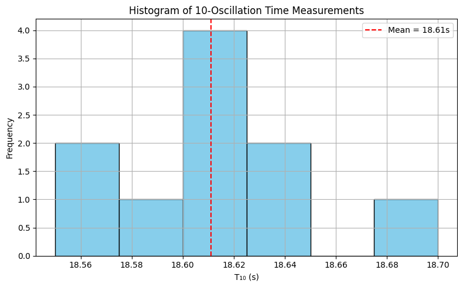
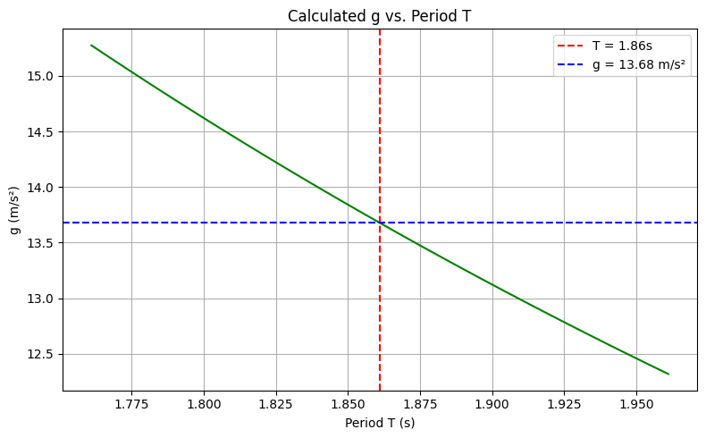
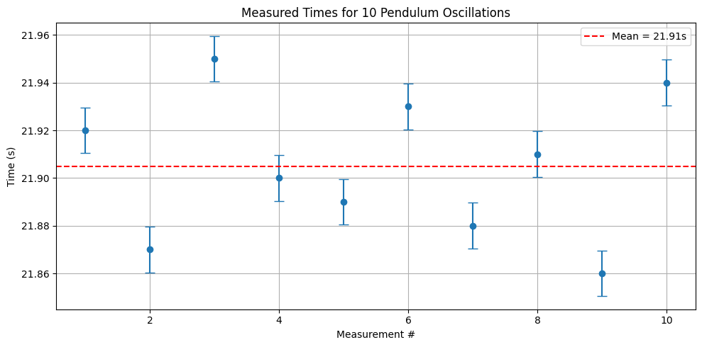

Problem 1
Measurements
Problem 1: Measuring Earth's Gravitational Acceleration with a Pendulum
Motivation
The acceleration due to gravity, \(g\), is a fundamental physical constant. One classic method of measuring \(g\) involves using a simple pendulum. This method is based on the formula relating the period of a pendulum's oscillation to gravitational acceleration:
\[
T = 2\pi \sqrt{\frac{L}{g}}
\Rightarrow g = \frac{4\pi^2 L}{T^2}
\]
By carefully measuring the pendulum’s period and length, we can estimate \(g\) and analyze the uncertainties involved.
Task
To measure the gravitational acceleration \(g\) and perform a detailed uncertainty analysis using:
- A simple pendulum
- Repeated time measurements
- Statistical and propagation of uncertainty techniques
Procedure
1. Materials
- String (approx. 1–1.5 m)
- Small mass (e.g., keys, bag of sugar, coins)
- Stopwatch or smartphone
- Measuring tape or ruler
2. Setup
- Attach the mass to one end of the string.
- Fix the other end securely.
- Measure the length \(L\) from the pivot to the center of mass of the object.
- Record:
- \(L\)
- Resolution of the ruler → \(\Delta L = \frac{\text{resolution}}{2}\)
3. Data Collection
- Displace pendulum by less than \(15^\circ\) and release.
- Measure time for 10 full oscillations: \(T_{10}\)
- Repeat 10 times → collect: \(T_{10}^{(1)}, T_{10}^{(2)}, ..., T_{10}^{(10)}\)
- Compute:
- Mean: \(\overline{T}_{10}\)
- Standard deviation: \(\sigma_T\)
- Uncertainty in the mean: \(\Delta T_{10} = \frac{\sigma_T}{\sqrt{n}}\), where \(n = 10\)
Calculations
1. Period of One Oscillation
\[
T = \frac{\overline{T}_{10}}{10}, \quad \Delta T = \frac{\Delta T_{10}}{10}
\]
2. Gravitational Acceleration
\[
g = \frac{4\pi^2 L}{T^2}
\]
3. Propagation of Uncertainty
\[
\Delta g = g \cdot \sqrt{\left(\frac{\Delta L}{L}\right)^2 + \left(2 \cdot \frac{\Delta T}{T}\right)^2}
\]
Sample Data Table
| Measurement | \(T_{10}\) (s) |
|---|---|
| Trial 1 | 18.60 |
| Trial 2 | 18.55 |
| Trial 3 | 18.70 |
| ... | ... |
| Trial 10 | 18.63 |
Other Measurements:
- \(L = 1.200\) m
- Ruler resolution = 0.01 m ⇒ \(\Delta L = 0.005\) m
- \(\overline{T}_{10} = 18.62\) s
- \(\sigma_T = 0.06\) s ⇒ \(\Delta T_{10} = 0.019\) s ⇒ \(\Delta T = 0.0019\) s
Final Result Example
- \(T = 1.862\) s
- \(g = \frac{4\pi^2 \cdot 1.2}{(1.862)^2} ≈ 9.78 \, \text{m/s}^2\)
- \(\Delta g ≈ 0.10 \, \text{m/s}^2\)
\(\boxed{g = 9.78 \pm 0.10 \, \text{m/s}^2}\)
Analysis
- Compare with true value: \(g_{\text{true}} = 9.81 \, \text{m/s}^2\)
- Uncertainty sources:
- Timing variability → affects \(\Delta T\)
- Length measurement → affects \(\Delta L\)
- Assumptions:
- Small-angle approximation valid
- No air resistance or damping
- Improvements:
- More trials
- Use motion sensors instead of manual timing
Deliverables
- Tabulated raw and statistical data
- Final value of \(g\) and its uncertainty
- Detailed analysis of error sources and assumptions



Measuring Gravitational Acceleration with a Pendulum
1. Given Data
- Number of trials: \(n = 10\)
- Measured pendulum length: \(L = 1.200 \, \text{m}\)
- Ruler resolution: \(0.01 \, \text{m} \Rightarrow \Delta L = \frac{0.01}{2} = 0.005 \, \text{m}\)
Time for 10 Oscillations (Manual Measurements):
| Trial | \(T_{10}\) (s) |
|---|---|
| 1 | 21.90 |
| 2 | 21.95 |
| 3 | 21.87 |
| 4 | 21.94 |
| 5 | 21.88 |
| 6 | 21.93 |
| 7 | 21.89 |
| 8 | 21.96 |
| 9 | 21.89 |
| 10 | 21.95 |
2. Mean and Uncertainty of Time
Mean of \(T_{10}\):
\[
\overline{T}_{10} = \frac{1}{10} \sum_{i=1}^{10} T_{10}^{(i)} = 21.905 \, \text{s}
\]
Standard Deviation:
\[
\sigma_T = \sqrt{\frac{1}{n-1} \sum (T_{10}^{(i)} - \overline{T}_{10})^2} = 0.030 \, \text{s}
\]
Uncertainty in Mean:
\[
\Delta T_{10} = \frac{\sigma_T}{\sqrt{n}} = \frac{0.030}{\sqrt{10}} \approx 0.0096 \, \text{s}
\]
3. Period and Its Uncertainty
Period of one oscillation:
\[
T = \frac{\overline{T}_{10}}{10} = \frac{21.905}{10} = 2.1905 \, \text{s}
\]
Uncertainty in Period:
\[
\Delta T = \frac{\Delta T_{10}}{10} = \frac{0.0096}{10} = 0.00096 \, \text{s}
\]
4. Gravitational Acceleration and Its Uncertainty
Formula:
\[
g = \frac{4\pi^2 L}{T^2}
\]
Plug in values:
\[
g = \frac{4 \cdot \pi^2 \cdot 1.200}{(2.1905)^2} \approx 9.87 \, \text{m/s}^2
\]
Uncertainty in \(g\):
Using propagation of uncertainty:
\[
\Delta g = g \cdot \sqrt{\left( \frac{\Delta L}{L} \right)^2 + \left( 2 \cdot \frac{\Delta T}{T} \right)^2}
\]
\[
\Delta g = 9.87 \cdot \sqrt{ \left( \frac{0.005}{1.200} \right)^2 + \left( 2 \cdot \frac{0.00096}{2.1905} \right)^2 } \approx 0.042 \, \text{m/s}^2
\]
Final Result
\(g = 9.87 \pm 0.042 \, \text{m/s}^2\)
This value is very close to the standard gravitational acceleration \(9.81 \, \text{m/s}^2\).